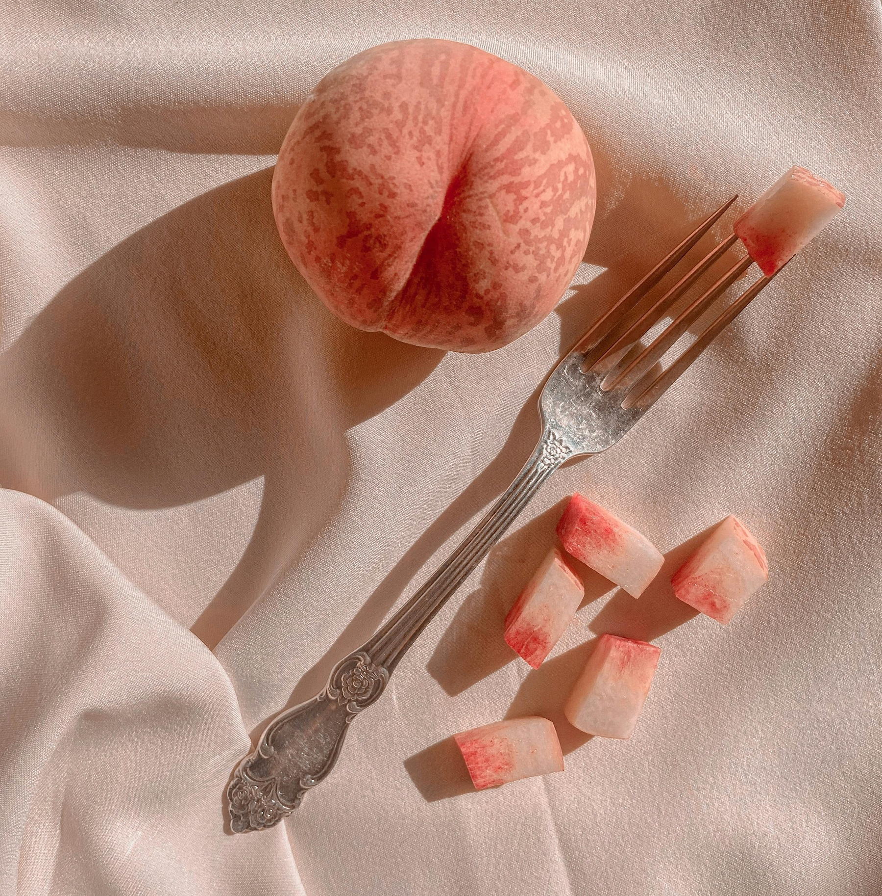

Craftowe widelce
Witaj w świecie wyjątkowych, ręcznie tworzonych widelców – gdzie tradycja spotyka się z nowoczesnym rzemiosłem. Nasze produkty to coś więcej niż sztućce – to wyraz stylu, pasji i szacunku do detali.
Odkryj piękno w naszych craftowych widelcach
Każdy widelec opuszczający naszą manufakturę jest małym dziełem sztuki. Z dbałością o każdy detal, łączymy estetykę z funkcjonalnością, tworząc produkty, które cieszą nie tylko oko, ale i duszę.

Nowoczesne i zrównoważone procesy produkcyjne
Stosujemy technologie przyjazne środowisku i korzystamy z lokalnych źródeł materiałów. Dzięki temu nasze widelce powstają w duchu zrównoważonego rozwoju – z szacunkiem do natury i tradycji.
Najwyższa jakość dzięki najlepszym surowcom
Wykorzystujemy tylko certyfikowaną stal nierdzewną oraz naturalne drewno pochodzące z polskich lasów. To gwarancja trwałości, higieny i wyjątkowego wyglądu każdego naszego produktu.
O nas - manufaktura craftowych widelców
Jesteśmy małą, rodzinną firmą z serca Polski, która od lat z pasją tworzy sztućce inne niż wszystkie. Wierzymy, że codzienne przedmioty mogą nieść wartość emocjonalną i estetyczną.
Nasza historia
Początki sięgają lat 90., kiedy to nasz założyciel, inspirowany dziedzictwem rzemieślniczym regionu, postanowił stworzyć coś unikalnego. Z małego warsztatu przekształciliśmy się w manufakturę, zachowując ducha ręcznej pracy.
Kim jesteśmy?
Zespół naszej manufaktury to ludzie z pasją do rzemiosła, designu i jakości. Łączymy tradycyjne techniki z nowoczesnym podejściem, by dostarczać klientom produkty, które przetrwają pokolenia.
Dlaczego warto kolekcjonować craftowe widelce?
Craftowe widelce to nie tylko użytkowe przedmioty – to również element kolekcjonerski, który zyskuje na wartości z biegiem lat. Każdy egzemplarz ma swoją historię i niepowtarzalny charakter.
Skontaktuj się z nami
Jesteś zainteresowany naszymi craftowymi widelcami? Napisz do nas na kontakt@widelce24.pl